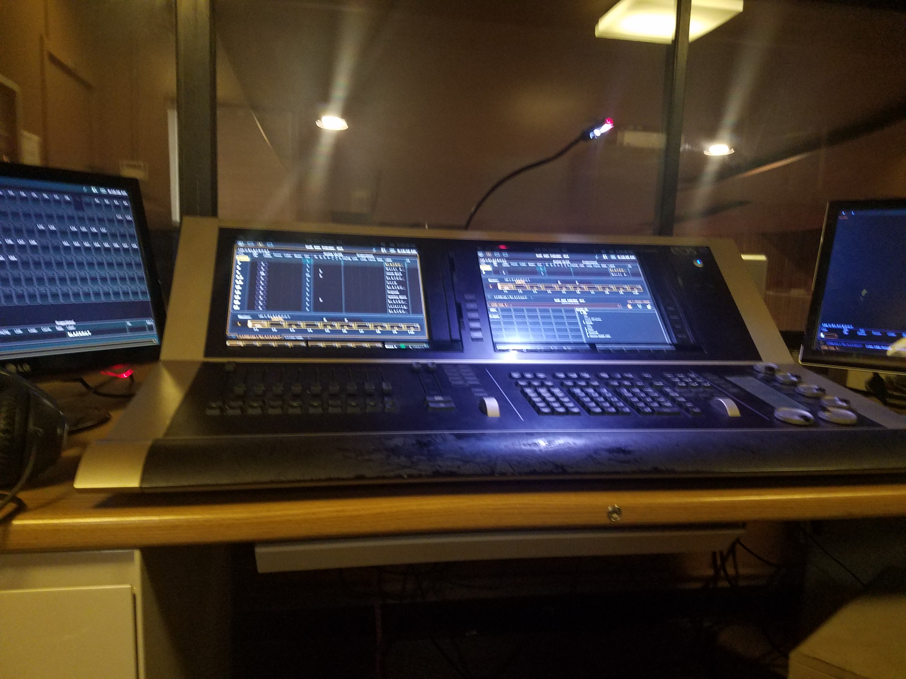
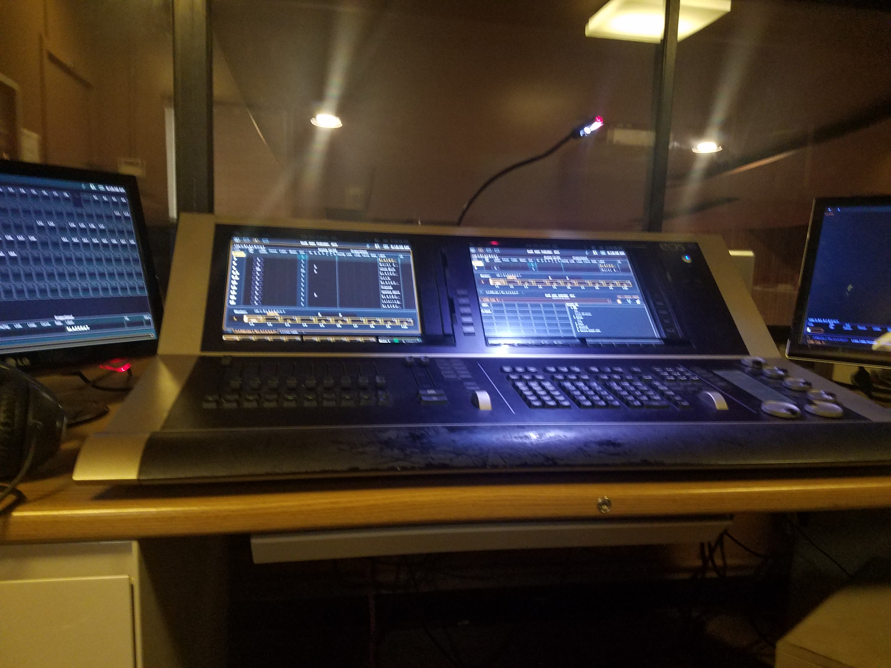
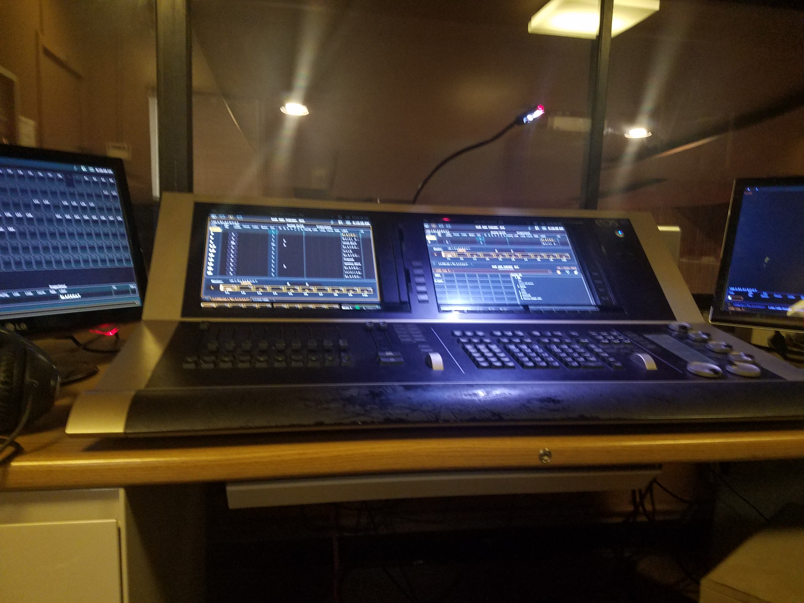
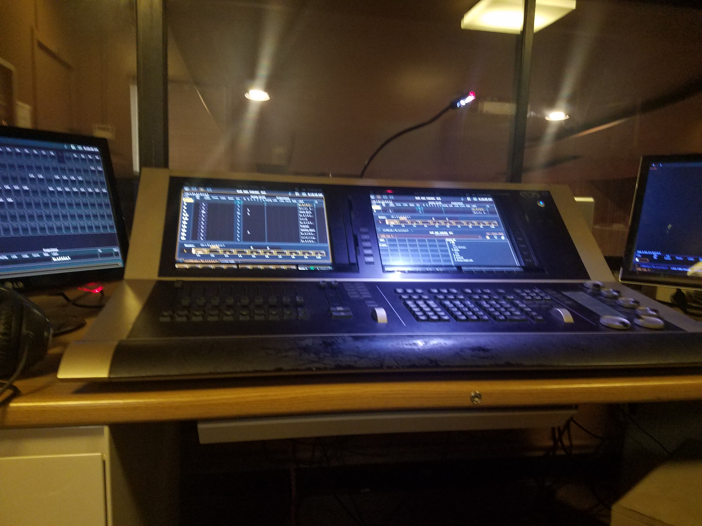

Portfolio

 


What pushes me in school is knowing that one day I will able to further advance on my current knowledge of how the world around me works. At a certain point in my life, I want to become a Forensic Anthropologist; I want to put forth my knowledge and help in a crime scene and connect the dots with my expertise. I want for so much but to solve something beyond me and beyond my current knowledge. Before I can reach my goal, I know I should explore the many things that relate to humans and the environment, community and an inevitable overarching societal impact because that is what Anthropology consists of, human societies and development drawn out by data and the importance of research projects that have signified society. A broader connection to community and the environment I work in now will support my greater goal of becoming a Forensic Anthropologist.
Whatever job I work in through my time in school, though minor to my greater goal, all contribute to a unique bond of human interaction. Sometimes, found in my jobs are types of people I never thought I would have had the pleaure of meeting. Different, they all have their own significant impact on society as a whole. Simply, to strengthen the forensic sciences, we must engage people from a broad array of scientific disciplines and backgrounds to help provide innovative solutions to complex criminal justice issues.
I know one day, after I graduate and continue on to working as a Forensic Athropologist, I will continue to be able to gain the same experience and knowledge I had in working my previous jobs. But now, I will be accompanied by those who may think the same strategically, but that will always have their own perspectives and own ideals that will help contribute within our special need to solve any case.
• Operated lighting board
• Strong communication with staff/stage managers
• Gave assistance to theatergoers
• Contacted local companies affiliated with Kaiser
to make sure they were still in service
• Managed and assembled booklets for patients
